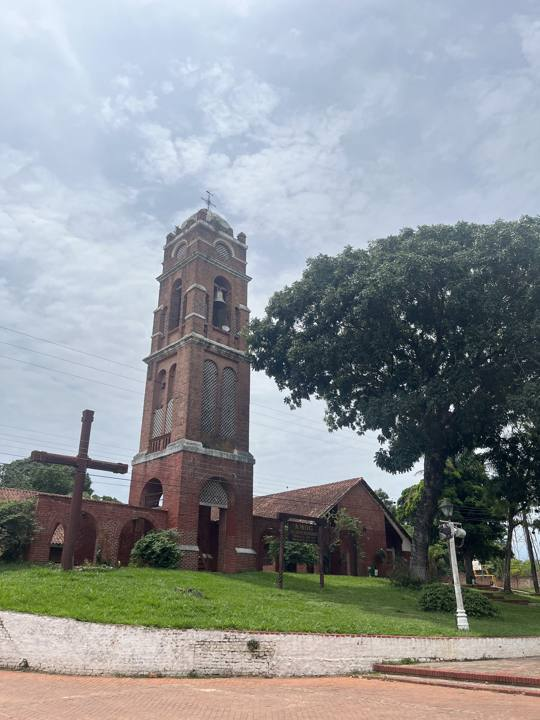

Buena Vista (northern Amboró)
Santa Cruz Department · Jungle and tropics

Buena Vista is a former mission facing the mountains of Amboró park, on the lowland side. It's the gateway to the tropical part of the park: clear rivers, forests full of birds, butterflies and, with luck, monkeys and peccaries. The village also grows good coffee. A great nature escape two hours from Santa Cruz.
350 maltitude
2 to 3 daysto spend there
Things to do
- Trips into Amboró park with a guide
- Rivers and swimming
- Birds, butterflies and rainforest
- Buena Vista coffee
What to eat
- MajaditoRice cooked with charque or chicken, served with a fried egg and fried plantain. The dish of Santa Cruz and the Beni.
- Sonso de yucaCassava and cheese dough grilled on a skewer. A speciality of the east, eaten hot.
- Tropical fruitMangoes, pineapples, papayas, achachairú (a small tangy fruit) and fresh juices everywhere for a few bolivianos.
Tip. Bus or minibus from Santa Cruz, about 2 h. Bring repellent and light long-sleeved clothes.
How to get to Buena Vista
Santa Cruz Road (bus, car) · about 2 h
Buses and minibuses towards Yapacaní (get off at Buena Vista).
Photos of Buena Vista (northern Amboró)


More places in this region
 Santa Cruz de la SierraThe big, modern tropical city of the east, with an international airport (Viru Viru).
Santa Cruz de la SierraThe big, modern tropical city of the east, with an international airport (Viru Viru). CotocaThe sanctuary of the Virgin of Cotoca and its potters, 20 km from Santa Cruz.
CotocaThe sanctuary of the Virgin of Cotoca and its potters, 20 km from Santa Cruz. Lomas de ArenaWhite sand dunes and lagoons south of Santa Cruz.
Lomas de ArenaWhite sand dunes and lagoons south of Santa Cruz. EspejillosNatural pools and waterfalls on a river near Santa Cruz.
EspejillosNatural pools and waterfalls on a river near Santa Cruz. Laguna VolcánA lake hidden in a bowl of forested mountains.
Laguna VolcánA lake hidden in a bowl of forested mountains. SamaipataA bohemian village between the Andes and the forest: El Fuerte (UNESCO) and Amboró park.
SamaipataA bohemian village between the Andes and the forest: El Fuerte (UNESCO) and Amboró park. Amboró National ParkCloud forests and tree ferns, very rich in birds.
Amboró National ParkCloud forests and tree ferns, very rich in birds. VallegrandeA small colonial mountain town at the heart of the Che Route.
VallegrandeA small colonial mountain town at the heart of the Che Route. La HigueraThe hamlet where Che was executed in 1967, now a place of memory.
La HigueraThe hamlet where Che was executed in 1967, now a place of memory.